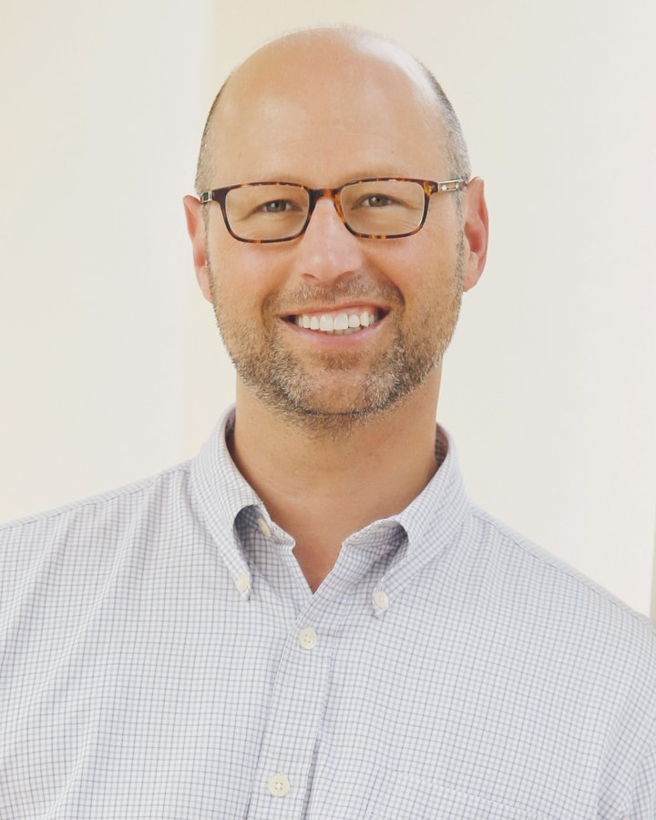

Advisory
Learning-centric schools that actually hold.
Remaking School partners with school and system leaders to design, test, and refine the structures that transformation demands. We call it iterative design. We put the craft of teaching at the center. These are not normal times for American schools — the models that emerge now will shape a generation.
The Method
Iterative design. Build it, watch it, rebuild it.
Top-down reform installs frameworks that don't survive contact with classrooms. Bottom-up innovation burns out the people who try. We work the seam between them. The grammar of schooling — rigid periods, siloed subjects, sorted students, letter grades — absorbs most reform efforts whole. Our approach is different: design something small, put it in front of students, watch what actually happens, rebuild from what you learn. The goal isn't a perfect plan. It's a team that owns the discipline long after we've left the building.
01
Design
Frame a small, testable structure — a schedule block, a grading practice, a protocol — scoped tight enough to try next week.
02
Implement
Run it with real students and teachers. Keep it contained so you can see what's actually happening.
03
Analyze
Gather evidence — observation, student work, teacher reflection — and name what held and what didn't.
04
Refine
Adjust the design and run it again. The cycle repeats until the structure earns its place.
Learning-centric
We don't say "student-centered" — that framing sets teachers and students on opposite sides of a seesaw. Learning-centric keeps them on the same side. The craft of teaching is the lever. When teaching gets sharper, young people thrive.
Youth Participatory Action Research
Beyond "student voice." YPAR treats students as co-researchers — designing inquiries, gathering evidence, analyzing what they find, and presenting to the adults who can act. Not feedback. Methodology.
Community-based & cross-sector
Organic innovation doesn't happen inside school walls alone. It requires cross-sector relationships — with universities, museums, employers, civic organizations — and the trust that lets outside expertise move inside without displacing local ownership. We design for collaboration, not adoption.
What we're not.
The current narrative frames student-centered reform as permissive — no accountability, no consequences. That's a caricature, and it's not us. We are driven by the science of early adolescent development and the ways schools can be reshaped to create more equitable conditions where young people become agents of their own futures. Rigor and care aren't opposites. Structure and autonomy aren't opposites. We build schools that hold students to high expectations and equip them with the knowledge, skills, and mindsets to meet them.
Our Team
Practitioners first. Consultants second.
We assemble project teams from a deep network of school designers, researchers, practitioners, and system leaders — people who have built and led the models they advise on. Every engagement is staffed to the challenge.

Chad Ratliff
Founder & Principal
Principal of a public 6–12 R&D lab school in Virginia · District-level leadership in principal development and strategic planning · Lecturer at the University of Virginia in the School of Education and Human Development and the McIntire School of Commerce
Chad works at the seam between research and practice on a problem most school systems now have and few can name. Over the past decade, networks became the way American K–12 education tries to improve — and almost no one prepared leaders for the role at the hub. Chad both studies it and does it. He runs a public lab school, leads district-level work in principal development and strategic planning, and is writing the synthesis that pulls a scattered literature into a single account of what the hub role demands. The field is still being drawn. He's one of the people drawing it.
At UVA he teaches What the Innovators Do in the School of Education and Human Development and Entrepreneurial Thinking for Social Impact in the McIntire School of Commerce, finishing an Ed.D. focused on hub leadership in networked improvement. He is co-author of Timeless Learning: How Imagination, Observation, and Zero-Based Thinking Change Schools.
His work has put him in front of audiences that rarely overlap — the White House during the Obama administration, the Virginia General Assembly, the U.S. Patent and Trademark Office, and World Maker Faire among them. He has served as principal investigator on a $3.5 million U.S. Department of Education Investing in Innovation (i3) grant and has built research collaborations with the MIT Teaching Systems Lab, the Smithsonian, Princeton, and others.
Selected
- Co-author, Timeless Learning
- Walter Eugene Campbell Award for Educational Leadership, University of Virginia (2025)
- National School Boards Association "20 to Watch" in education
- Principal Investigator, $3.5M U.S. Dept. of Education i3 grant
- Virginia Division Superintendent License
- M.Ed., University of Virginia · M.B.A., Virginia Tech · Ed.D. candidate, UVA
Engagements
Where the work happens.
We partner with individual schools, districts, networks, foundations, and the leaders navigating roles no preparation pathway serves. Every engagement is sized to the question in front of you.
Leadership coaching
Ongoing support for principals, superintendents, and hub leaders navigating the decisions that transformation demands. Working real problems through iterative cycles, building the judgment the role requires.
Strategic advising
Partnering with schools, districts, and organizations to build the structures — schedules, grading systems, roles, partnerships — that ambitious models need to hold. We help leaders look around the corner to what's next.
Hub & network leadership
Diagnosing hub capacity against the six domains the role actually demands — building the network, managing hub capacity, leading improvement, reflecting on the system, attending to equity, and managing external relationships. We design the roles and routines a network runs on and develop the people in the middle.
Cohort facilitation
Guiding groups of schools or leaders through convenings and the stretches between them. Networks learn out loud rather than in isolation — we design the conditions that allow young people furthest from opportunity to benefit from what the network knows.
Keynotes & presentations
Talks on high school transformation, hub leadership, iterative design, project-based learning, maker education, AI in education, and teacher culture. From the White House to World Maker Faire to state conferences — bringing research and practice to audiences that need both.
Recent collaborations
The method isn't the missing piece. Improvement science is well supplied. What's missing is the leadership that improvement science needs to survive contact with real organizations.Remaking School
Start a conversation
Bring the practice to your team.
If you're building a learning-centric model — or trying to make one hold — we'd like to hear what you're working on.
Get in touch